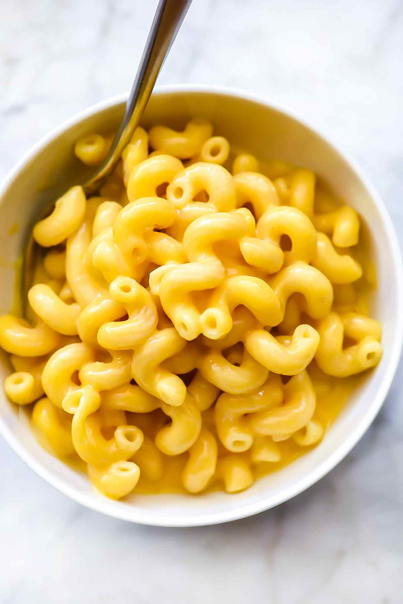

Homemade Mac and Cheese

a pic of homemade mac and cheese
Description
its really good and mac and cheesy
Here are the ingredients
- 8 oz uncooked elbow macaroni
- 2 cups shredded sharp cheddar cheese
- 1/2 cup grated parmesan cheese
- 3 cups milk
- 1/4 cup of butter
- 2 1/2 tablespons all-purpose flour
- 2 tablespoons butter
- 1/2 cup bread crumbs
- 1 pinch paprika
Here are the steps to make it
- Cook macaroni according to the package directions. Drain.
- In a saucepan, melt butter or margarine over medium heat. Stir in enough flour to make a roux.
Add milk to roux slowly, stirring constantly. Stir in cheeses, and cook over low heat until cheese is melted and the sauce is a little thick.
Put macaroni in large casserole dish, and pour sauce over macaroni. Stir well.
- Melt butter or margarine in a skillet over medium heat. Add breadcrumbs and brown.
Spread over the macaroni and cheese to cover. Sprinkle with a little paprika.
- Bake at 350 degrees F (175 degrees C) for 30 minutes. Serve.